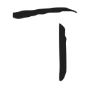

Private glyph proofsheet
PRIVATE · UNREVIEWED SUPPLIED LABELS
These are crops of supplied pixels. Supplied sequence declarations are not character recognition or author acceptance. Shape, sequence mapping, authorship and permission require review before font construction or publication.
- Piece / editorial version
- p001 / p001-diary1-0
- Source SHA-256
- 5de0901485952e6ad279fce6ea102af4f830f2a4813e82842a90ebcc3d8d217a
- Source locator
- 4444J99/journal-handwritten-web@038d01fb1862f2e569d231b5b3c4c3a4eb1aecda: existing reading with exported corrections
- Source visibility / collection
- private / unsorted
- Declared actor / role
- T10-tooling; source handwriting/font by 4444J99 / technical-fixture
- Evidence declaration
- Existing supplied OTF file_0000000062ec81f5bd6460094274fc8e, SHA-256 ca96121b6e1425012825ef97f9d876d0d6bfe9ba7fb5b5b20bcab99fc9e99fbc. Font-derived raster fixture; no fresh handwriting, no new glyph design or author acceptance.
Capture source: file_0000000062ec81f5bd6460094274fc8e · font-derived technical raster, not a notebook scan or fresh author capture; exact existing OTF SHA-256 ca96121b6e1425012825ef97f9d876d0d6bfe9ba7fb5b5b20bcab99fc9e99fbc
Capture SHA-256: ecd384446e0fdca6113b8a1c1fe38c9e7da776c1499f95715953f549bc842a30
| Declared sequence | Original crop | Provenance |
|---|
| g001 T U+0054 |  | Source rectangle [236, 57, 127, 126]
Crop SHA-256 5733f75e4f170d2ba3673d4f87c12486643e2bec770eae4cb82eda889cbd5873 |